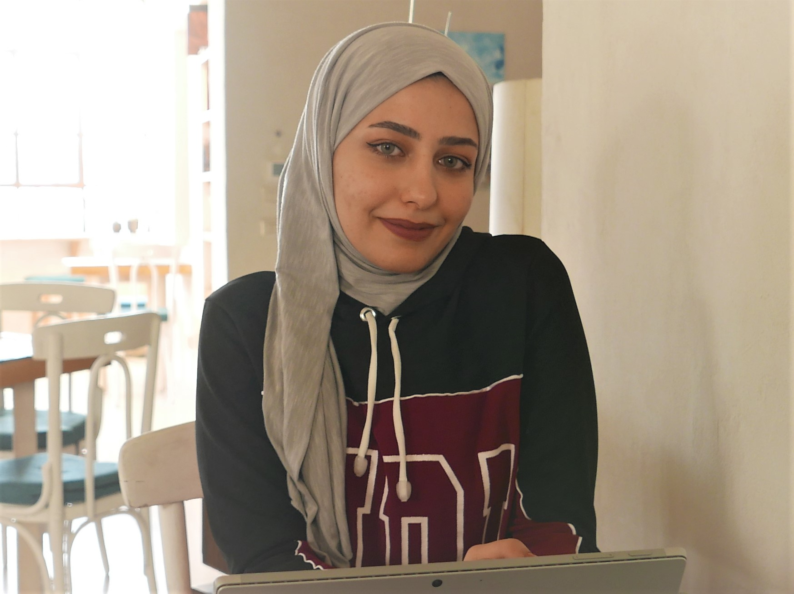

We can apply this knowledge and exprience to your organisation.
The Council of Europe states that it takes around 200 hours of guided study to move between two of their levels (B2 - C1 for example). If those were work hours, you would be expected to move up a level in about a month. In reality this is unlikely to happen. The difference is practice is not the same as guided study. However, our aim is to be your guide.
Our courses offer specific work-related language and communication development. We don't just develop your English, we also aim to make to a better learner and communicator meaning those hours of working in English will be hours developing.
Our guiding principles.
Language is used to communicate thoughts, ideas and feelings between people and groups. As such, we believe that language learning should always be communicative. Our classes encourage active communication between participants that provides the space and challenge required for language learning.
Fluency practice is vitally important but as we work primarily with people who work in English, it should not be your focus. Instead we offer courses based around the specific tasks you do in work. This means you can choose the area you want to develop and make improvement fast.
Language is more than knowing words and grammatical structures. Our classes develop reading, writing, listening and speaking skills. The language (and pronunciation) we teach is selected to help you perform these skills.
We don't believe in teaching you language you will never use or hear. We aim to give you language in context so it has a clear meaning and you know exactly how and when to use it.
Digital literacy is more important than ever and overlaps with language learning significantly. Conversing over email is not the same as speaking face to face or even over WhatsApp. We can help you understand the differences in the modes of communication and help you control how your message comes across. By using the technology you use to teach you, we also aim to develop layers of understanding that build confidence working online.
English is no longer a language just for the English. Just as it belongs to Americans, Australians, Irish and Scots, it also belongs to Vietnamese, Jordanians and Spaniards who use it as a lingua franca. Indeed, not everyone we will work with or deal with will speak 'native-level' English. By working in mixed ability groups (B1 - C2), we aim to replicate the real-world skills required to work in English.
Online learning gives easy access to those who might not be able learn otherwise. Additionally, we offer the option of enlarged and simplified materials for students who are visually impaired or have dyslexia or other cognitive differences.
Language learning should be interesting and fun. Our teachers are warm, personable and approachable and we aim to make your class the highlight of your day.
We don't just teach you, we believe in giving you the skills (and tools) to continually develop your communication.
Highlights of a demonstration class from our emailing course with some amazing students from the English Social group in Jordan. In the class we look at email etiquette: how you address and how you time your emails.
Watch a longer version here
I became more fluent and confident while speaking…. I have really developed my speaking skills and the language I can use daily.
Fintan is a flexible, positive teacher and students feel comfortable to ask questions and practise the language.
Manar Mohammed, English and Linguistics student
If you are interested in any of our courses or services, feel free to send us a message and we can work together to find the right solution for you.
Send us an email to info@starlingskills.com or book a consultation using the calendar below and we can discuss what works best for you.
Once you've sent us a message, do check your spam folder from time to time. Unfortunately, this is where our emails sometimes end up.
You can also contact us on Twitter @StarlingSkills or LinkedIn.